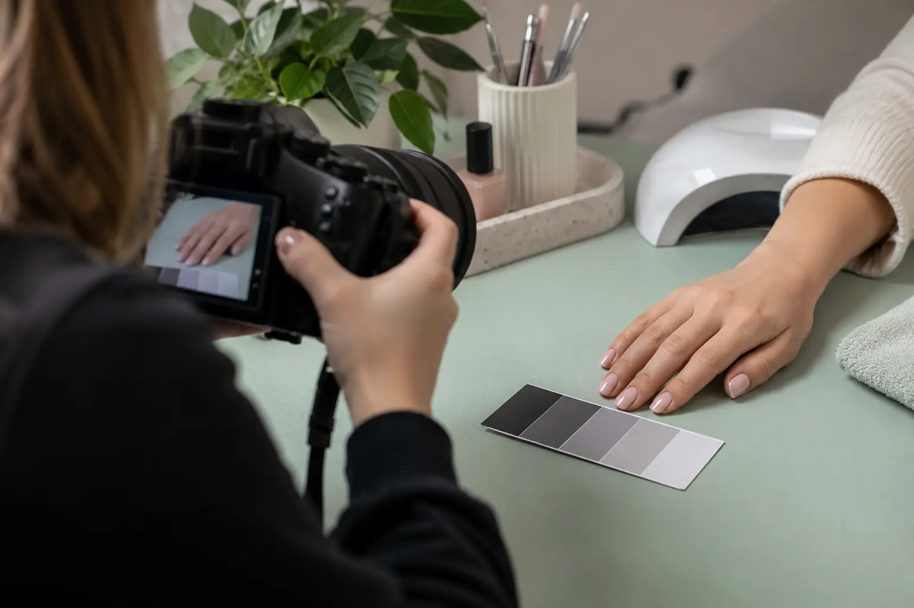

Meistrui: darbų fotografavimas, spalvos tikslumas ir publikavimo teisės
Autorius: Madbeauty redakcija · Numatyta 2026 m. lapkričio 17 d. 16:00 (Lietuvos laiku)
Kaip pateikti darbų galeriją, kuri padeda įvertinti paslaugą? Aptariame nuotraukų kontekstą, retušą ir darbo bei kliento atvaizdo teises.

Galerija padeda įvertinti darbą tada, kai nuotraukos daromos panašiomis sąlygomis, redaguojamos nuosekliai, o prieš fotografuojant aiškiai susitariama dėl jų viešinimo. Fotografuoti ir skelbti nėra tas pats: iš anksto aptarkite, kokios nuotraukos bus naudojamos, kur jos gali būti rodomos ir ar šalia bus nurodomas kliento vardas.
Vienodos sąlygos leidžia geriau palyginti
Apšvietimas ir kameros baltos spalvos balansas keičia tai, kaip nuotraukoje atrodo atspalviai. Todėl spalvos ekrane negalima laikyti tiksliu matavimu. Fotografuokite vienoje tolygiai apšviestoje vietoje, nekeiskite be reikalo kameros, atstumo, kampo ir fono. Venkite viename kadre maišyti skirtingos spalvos šviesos šaltinius.
Jei norite nuosekliau nustatyti baltos spalvos balansą, pilka kortelė gali būti neutraliu orientyru. Adobe paaiškinimas apie baltos spalvos balansą aprašo šį fotografavimo principą; kortelė nepaverčia nuotraukos laboratoriniu spalvos matavimu.
- Pasirinkite vieną apšvietimo vietą ir panašų foną.
- Prieš kadrų seriją nusistatykite baltos spalvos balansą ir patikrinkite, ar telefone ar kameroje neveikia spalvas keičiantys filtrai.
- Prieš ir po darbo fotografuokite iš panašaus atstumo bei kampo. Jei sąlygos skiriasi, nepateikite kadrų kaip tiesiogiai palyginamų.
- Prie nuotraukos trumpai nurodykite, kokio darbo ar jo etapo pavyzdys tai yra. Neskelbkite kliento vardo ar kitų detalių, kurių viešinimo nesuderinote.
Originalas ir retušas turi pasakoti tą pačią istoriją
Išsaugokite originalų kadrą atskirai nuo galerijai paruoštos kopijos. Apkirpimas ar nedidelis viso kadro šviesumo pataisymas gali padėti jį pateikti aiškiau, tačiau atrankinis odos lyginimas, spalvos pakeitimas ar darbo detalių pašalinimas gali sudaryti klaidingą įspūdį apie rezultatą. Jei pakeitimas keičia tai, ką klientas turėtų vertinti, tokio kadro nenaudokite kaip atlikto darbo pavyzdžio.
Nenaudokite kito meistro nuotraukų ar sugeneruoto vaizdo taip, tarsi jame būtų jūsų klientas ir jūsų atliktas darbas. Iliustraciją galima pateikti kaip iliustraciją, o tikrų darbų galerijoje rodykite tik tuos vaizdus, kuriuos turite teisę naudoti ir kurių kontekstas aprašytas teisingai.
Atskirai aptarkite fotografavimą, viešinimą ir nuotraukos naudojimo teises
Prieš fotografuodami paaiškinkite klientui, kokiu tikslu norite kadrų. Aptarkite, ar matysis veidas, tatuiruotės ar kitos atpažinti galinčios detalės, ir ar nuotrauka bus naudojama tik darbų galerijoje, ar ir socialiniuose tinkluose bei reklamoje. Jei fotografiją darė kitas žmogus, su juo taip pat suderinkite, ar galite ją naudoti savo kanaluose.
VDAI paskelbtame 2023 m. sprendime nagrinėtas konkretus identifikuojamų kūno vaizdų viešinimo atvejis. Tai vieno atvejo medžiaga, o ne universali išvada apie kiekvieną nuotrauką ar sutikimo formą. Susipažinkite su VDAI sprendimu, jei reikia suprasti, kodėl svarbu aiškiai aptarti konkretų viešinimo kontekstą.
Praktinis susitarimo ruošinys gali būti trumpas, bet konkretus. Prieš fotografuojant užsirašykite atsakymus į šiuos klausimus:
- Kuriuos vaizdus leidžiama naudoti: nuotraukas, vaizdo įrašą ar abu?
- Kur jie gali būti rodomi: svetainės galerijoje, socialiniuose tinkluose, reklamoje ar kitur?
- Ar šalia bus kliento vardas, ar pavyzdys bus pateikiamas anonimiškai?
- Kas fotografavo ir kas turi teisę pateikti vaizdą konkrečiam naudojimui?
- Į ką klientas gali kreiptis, jei vėliau norėtų aptarti nuotraukos naudojimą?
Pavyzdinis sakinys pokalbiui: „Norėčiau nufotografuoti šį darbą ir parodyti jį [nurodykite kanalą bei tikslą]. Ar sutinkate? Ar norėtumėte, kad nuotraukoje nesimatytų jūsų veido arba kad ji būtų pateikta be vardo?“ Užrašykite konkretų susitarimą ir nekeiskite jo apimties tyliai.
Kai galeriją peržiūri būsimas klientas, jam svarbu ir tai, kaip suprasti pateiktus pavyzdžius. Susijusiame gide „Kaip vertinti meistro darbų galeriją“ aptariama, kokio konteksto ieškoti vertinant darbus.
Susiję gidai
Šaltiniai
- VVTAT · grožio paslaugos ir ginčai · vvtat.lrv.lt
- NVSC · teikėjo pasirinkimas ir instrukcijos · nvsc.lrv.lt
- VDAI · viešas nuotraukų paskelbimas · vdai.lrv.lt
- Adobe · apšvietimas ir baltos spalvos balansas · www.adobe.com